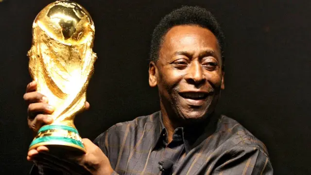

About
Top 5 football players of all time
1.Lionel Messi
Lionel Messi (Argentina) - 802 goals, 42 trophies Emerging from Barcelona’s academy La Masia, Lionel Messi quickly became one of the best players in football, winning his first Ballon d’Or in 2009 at the age of 22. He went on to win seven of them. He won the coveted treble twice with Barcelona and finally ended his wait for a major international trophy with the Copa America 2021 and then added the FIFA World Cup 2022 trophy to his haul, which also includes an Olympic gold medal from Beijing 2008. He is also the only player in history to win two Golden Balls in World Cups (2014 and 2022). Now in the twilight of his career, the Argentinian legend is now playing in the United States with Inter Miami. In his short time in Miami, he has made an impact by helping the franchise win the Leagues Cup which is the first ever in the history of the franchise. While the Miami outfit is yet to establish itself as a powerhouse in the MLS, many fans of the team and neutrals alike are confident that it is only a matter of time until the team starts competing for the MLS title with the addition of Messi to the squad.

2.Cristiano Ronaldo
Cristiano Ronaldo (Portugal) - 819 goals, 34 trophies Cristiano Ronaldo is the greatest goal-scorer in football history and won league titles in three different countries - England, Spain and Italy, over the course of his career. He also won five Champions League titles, four of which came during his iconic spell at Real Madrid. The five-time Ballon d’Or winner also scored four goals en route to Portugal’s first-ever major trophy, the UEFA Euro 2012.

3.Pele
Pele (Brazil) - 767 goals, 26 trophies Three-time World Cup-winner Pele announced his arrival on the global stage with six goals in the 1958 World Cup. Renowned among modern day fans as the first superstar of football, the “Black Pearl” went on to score over 700 goals for club and country, also winning multiple titles with Brazilian club Santos.
4.Maradona
Diego Maradona (Argentina) - 353 goals, 12 trophies Widely rated by multiple fans and experts as one of the greatest attacking players in football, Diego Maradona inspired a generation of footballers with his ball control and trickery. He won the 1986 FIFA World Cup with Argentina, scoring two goals each in the quarter-finals and semi-finals of the tournament. He also drove Napoli to the only two league titles they won in their history.
5.Johan Cruyff
Johan Cruyff (Netherlands) - 433 goals, 22 trophies Touted as the pioneer of “Total football”, Johan Cruyff is considered the most influential personality in football history for his contributions as player and manager. Johan Cruyff won three consecutive European Cup titles (currently Champions League) with Ajax, also winning the Ballon d’Or three times. With the Netherlands, he reached the FIFA World Cup finals two times in a row in 1974 and 1978.
Todays last match highlights
Real Madrid vs Man City
4-4 on aggregate
Real won 4-3 on penalties